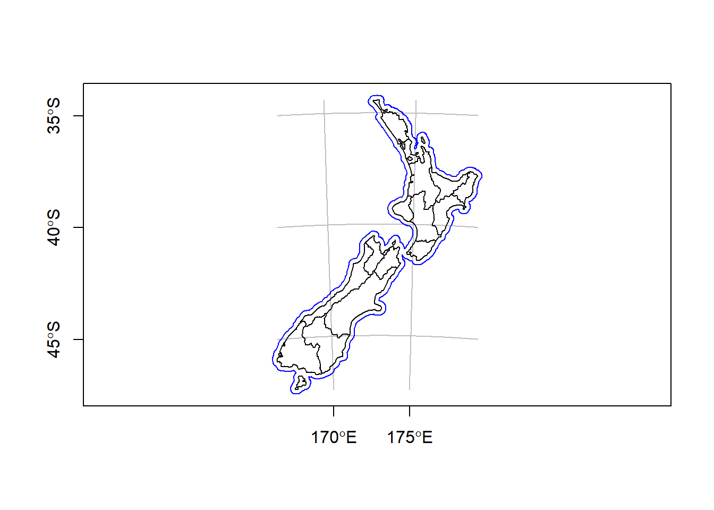

2 Introduction
Creating maps using spatial data in R
GIS is an area of R coding I have kept away from hoping that I would work it out at a later date. Sadly, it has got to the point where I want to be able to build more complex maps in shiny applications towards the end of my PhD and need to create a base of code to go from. Luckily, the text book “Spatial Analysis in R” has just come out in its second edition and is available in as a bookdown repository including the full text here. This page is a outline of the current resources I am working on and using for my publication and website maps. I have begun by using my normal reproducible workflow and file structure.
EXAMPLE You can use things like addWMSTiles() to add WMS (Web Map Service) tiles. The map below shows the Base Reflectivity (a measure of the intensity of precipitation occurring) using the WMS from the Iowa Environmental Mesonet:
leaflet() %>% addTiles() %>% setView(-93.65, 42.0285, zoom = 4) %>%
addWMSTiles(
"http://mesonet.agron.iastate.edu/cgi-bin/wms/nexrad/n0r.cgi",
layers = "nexrad-n0r-900913",
options = WMSTileOptions(format = "image/png", transparent = TRUE),
attribution = "Weather data © 2012 IEM Nexrad"
)2.0.1 NZ layers


2.0.1.1 Attributes
qtm() is a handy function to create quick thematic maps (hence the snappy name).
It is concise and provides a good default visualization in many cases:
qtm(nz), for example, is equivalent to tm_shape(nz) + tm_fill() + tm_borders().
Further, layers can be added concisely using multiple qtm() calls, such as qtm(nz) + qtm(nz_height).
The disadvantage is that it makes aesthetics of individual layers harder to control, explaining why we avoid teaching it in this chapter.
## [1] "tmap"#> [1] "tmap"
nz_water = st_union(nz) %>% st_buffer(22200) %>%
st_cast(to = "LINESTRING")
g = st_graticule(nz, lon = c(170, 175), lat = c(-45, -40, -35))
plot(nz_water, graticule = g, axes = TRUE, col = "blue")
# raster::plot(nz_elev / 1000, add = TRUE)
# map_nz1 = map_nz +
# tm_shape(nz_elev) + tm_raster(alpha = 0.7)
plot(st_geometry(nz), add = TRUE)
2.0.1.2 Asthetics
ma1 = tm_shape(nz) + tm_fill(col = "red")
ma2 = tm_shape(nz) + tm_fill(col = "red", alpha = 0.3)
ma3 = tm_shape(nz) + tm_borders(col = "blue")
ma4 = tm_shape(nz) + tm_borders(lwd = 3)
ma5 = tm_shape(nz) + tm_borders(lty = 2)
ma6 = tm_shape(nz) + tm_fill(col = "red", alpha = 0.3) +
tm_borders(col = "blue", lwd = 3, lty = 2)
tmap_arrange(ma1, ma2, ma3, ma4, ma5, ma6)